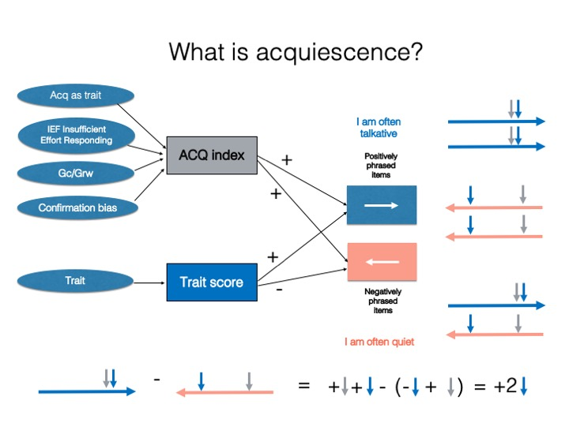
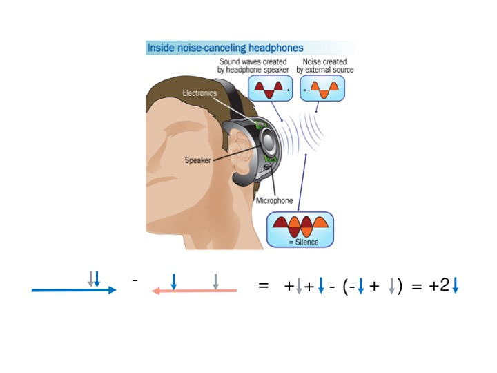

noisecanceling measures and corrects acquiescence response bias — the tendency to agree with questionnaire items regardless of their content — in psychological scales built with balanced items.
The noise-cancelling analogy
A good way to picture acquiescence correction is to think about how noise-cancelling headphones work. The headphones use a microphone to “hear” external noise and then play an inverted copy of that sound wave (180° out of phase). The original noise and its inverted copy cancel out, and a clearer signal emerges.
Balanced personality scales do something similar:
- the trait is the signal;
- acquiescence is the noise;
- the noise (acquiescence) appears as a positive push on both positively keyed (PK) and negatively keyed (NK) items.
When NK items are reverse-scored and items are summed into a scale score, the trait signal is realigned to a common pole while the acquiescence noise ends up split into equal positive and negative amounts that cancel out. If a scale is carefully built with PK/NK items, what remains after centering is a purified measure of the trait.


Installation
You can install the development version from GitHub with:
# install.packages("remotes")
remotes::install_github("rprimi/noisecanceling")Example
recode_for_acq() estimates a per-person acquiescence index from the balanced (paired) items and centers every response on it. find_psychometrics() then compares the psychometrics of the original and the acquiescence-corrected scores.
library(noisecanceling)
data(data_senna)
data(senna_dic)
# 1. Estimate the acquiescence index and recode the responses.
recoded <- recode_for_acq(data_senna, senna_dic)
head(recoded$acq_index)
#> acq_index ws_sd
#> 1 2.638298 1.1345130
#> 2 3.180851 1.8431084
#> 3 2.787234 1.2689200
#> 4 2.265957 1.2019297
#> 5 2.755319 0.9581139
#> 6 2.712766 1.0637966
# 2. Classical psychometrics, original vs. acquiescence-corrected.
psicom <- find_psychometrics(recoded, likert = 5, center = 3)
psicom$alpha_orig_scale_stat[, c("scale", "raw_alpha")]
#> # A tibble: 6 × 2
#> scale raw_alpha
#> <chr> <dbl>
#> 1 O 0.879
#> 2 C 0.938
#> 3 E 0.818
#> 4 A 0.842
#> 5 N 0.853
#> 6 OvCl 0.375The package also provides score_tests() for scoring scales directly, item_histograms() and describe_likert() for inspecting item distributions, and save_item_psicom() / save_loadings() for exporting results to Excel.
References
Primi, R., Santos, D., De Fruyt, F., & John, O. P. (2019). Comparison of classical and modern methods for measuring and correcting for acquiescence. British Journal of Mathematical and Statistical Psychology. https://doi.org/10.1111/bmsp.12168 (pre-print: Primi et al., 2018, OSF, https://doi.org/10.31219/osf.io/zsrwt)
Primi, R., De Fruyt, F., Santos, D., Antonoplis, S., & John, O. P. (2020). True or false? Keying direction and acquiescence influence the validity of socio-emotional skills items in predicting high school achievement. International Journal of Testing, 20(2), 97–121. https://doi.org/10.1080/15305058.2019.1673398
Primi, R., Hauck-Filho, N., Valentini, F., Santos, D., & Falk, C. F. (2019). Controlling acquiescence bias with multidimensional IRT modeling. In M. Wiberg, S. Culpepper, R. Janssen, J. González, & D. Molenaar (Eds.), Quantitative psychology (Springer Proceedings in Mathematics & Statistics, Vol. 265, pp. 39–52). Springer. https://doi.org/10.1007/978-3-030-01310-3_4
Primi, R., Hauck-Filho, N., Valentini, F., & Santos, D. (2020). Classical perspectives of controlling acquiescence with balanced scales. In M. Wiberg, D. Molenaar, J. González, U. Böckenholt, & J.-S. Kim (Eds.), Quantitative psychology (Springer Proceedings in Mathematics & Statistics, pp. 333–345). Springer. https://doi.org/10.1007/978-3-030-43469-4_25
Primi, R., Hauck-Filho, N., & Valentini, F. (2023). Self-report and observer ratings: Item types, measurement challenges, and techniques of scoring. In J. Burrus, S. H. Rikoon, & M. W. Brenneman (Eds.), Assessing competencies for social and emotional learning: Conceptualization, development, and applications (pp. 99–116). Routledge.
Primi, R., & Santos, D. (2018). Classical psychometric methods of acquiescence control with balanced scales. http://www.labape.com.br/acqu_mirt/methods_of_recoding.html
Primi, R., & Santos, D. (2018). Code for the simulations in “Comparison of classical and modern methods…” http://www.labape.com.br/acqu_mirt/simulation.html